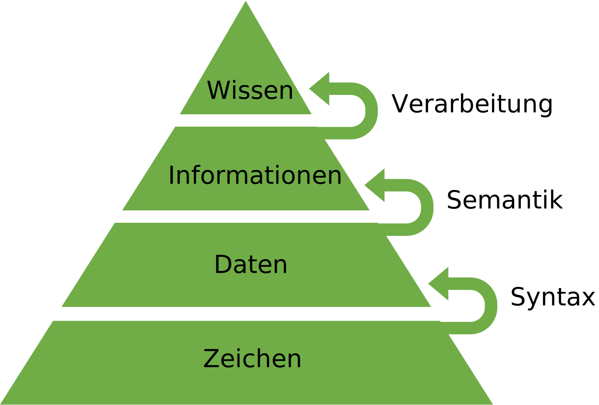

Wissenspyramide#
The purpose of computing is insight, not numbers.
— Richard Hamming
Folien/PDF#
Wissenspyramide#
Die Wissenspyradmide ist ein Modell zur Darstellung der Extraktion von Wissen durch Computer. Sie dient gut der Erklärung einger Grundbegriffe der Informatik wie Zeichen, Syntax, Daten, Semantik, Informaitonen, Datenverarbeitung und Wissen. Diese Begriffe werden pyramidenförmig als 4 Ebenen und Transformationsprozesse dargestellt.

Zeichen#
Zeichen formen die Basis der Pyramide. Sie sind die kleinsten Einheiten der Information und dienen als Grundlage für die Darstellung von Daten und Informationen. Zeichen können Buchstaben, Ziffern, Sonderzeichen oder Steuerzeichen sein.
Ein Zeichen codiert einen einzelnen Buchstaben, eine Ziffer, ein Sonderzeichen oder ein Steuerzeichen.
Beispiel 1: Deutsches Alphabet: mit Umlauten und Zahlen, Satztrennungs und -endzeichen.
Zeichensatz:
abcdefgijklmnopqrstuvwxyzABCDEFGHIJKLMNOPQRSTUVWXYZäöüßÄÖÜ0123456789,:;-.!?
Beispiel 2: ASCII-Text (ISO 8859-1) ist eine Codierung von 256 darstellbare Zeichen in 8 Bits. (Ursprünglich waren es nur 128 Zeichen in 7 Bits.)
Syntax#
Syntax wird benötigt um Zeichen in Daten zu überführen.
Formale Regeln, die definieren, wie wohlgeformte Ausdrücke auf Basis eines Zeichensatzes gebildet werden.
Beispiel 1: Deutsche Grammatik: Ein Satz besteht aus mehreren Wörtern mit mehreren alpha-numerischen Zeichen aus
a-zA-Z0-9. Zwei Worte sind durch ein Leerzeichen getrennt. Ein Wort kann mit einem Satztrennungszeichen aus,:;-beendet werden, außer am Ende des Satzes. Jeder Satz endet mit einem Satzendzeichen aus.!?
Beispiel 2: HTML (Internetseite) - Die Syntax-Definition einer HTML Datei ist grob: Jede Zeile enthält eine beliebige Folge von ASCII Zeichen. Jede Zeile endet mit einem Zeilenvorschub 10 (Linux) oder Wagenrücklauf 13 und Zeilenvorschub 10 (Windows). Eine Zeile kann einen HTML-Tag enthalten, der immer mit dem Zeichen
<beginnt, darauf folgt der Elementname und ggf. Attribute und endet mit>.
Daten#
Daten werden aus Zeichen extrahiert, sie sind eine Vorform von Informationen.
Eine wiederholt interpretierbare Darstellung von Information in formalisierter Art, geeignet zur Kommunikation, Interpretation oder Verarbeitung.
Beispiel 1: Ein entsprechend unseren Regeln syntaktisch korrekter Satz lautet z.B. „Ich Bahnhof nur verstehe.“ Dieser macht allerdings keinen Sinn.
Beispiel 2: HTML-Baum (DOM) - Ein Syntax-Baum der die Verschachtelung der HTML-Tags abbildet. Zum Beispiel wird die folgenden Tags in eine Tabelle, mit Zeilen (
<TR>) und zwei Zellen (<TD>) in einem Baum abgebildet.
<table width="300">
<tr height="50">
<td>Name</td>
<td>Birthday</td>
</tr>
</table>
Semantik#
In der Kommunikation ist es nicht nur notwendig formal korrekte Inhalte zu formulieren, sondern es ist auch wichtig die Bedeutung der Inhalte zu kennen und interpretieren zu können, das geschieht durch Semantik.
Vorgaben für die Interpretation von Daten.
Beispiel 1: So muss in einem Satz nicht nur der Satzbau stimmen, sondern es muss auch die Bedeutung der Worte bekannt sein. Im deutschem Wörterbuch steht z.B. die Definition von “Bahnhof”: Gesamtkomplex einer Bahnstation mit Gleisanlagen und zugehörigen Gebäuden; zum Bahnhof gehörendes Gebäude mit [großer] Halle, in der sich die Schalter für Fahrkarten und Gepäck, Wartesäle, Geschäfte o. Ä. befinden.
Beispiel 2: Bedeutung der HTML Elemente (https://www.w3schools.com/html/)
<table>Tabelle
<td>Tabellen Zeile
<td>Tabellen Zelle
Informationen#
Informationen haben einen spezifischen Sinn und Zweck.
Daten, die mit Sinn und Zweck versehen sind. Sie haben Bedeutung und sind für einen bestimmten Zweck organisiert. Informationen zum Beispiel sind eine Sammlung von Daten mit  zugehörigen Erklärungen, Interpretationen und anderes Textmaterial, die ein bestimmtes Objekt, Ereignis oder einen bestimmten Prozess betreffen.
Beispiel 1: Korrekter deutscher Satz z.B. „Ich verstehen nur Bahnhof.” ist zwar syntaktisch korrekt und wir kennen die Bedeutung jedes Wortes. Allerdings bleibt der Satz für Ausländer unverständlich, weil ihnen der Kontext fehlt die Redewendung zu verstehen.
Beispiel 2: Interpretierter HTML-Baum. Zum Beispiel wird in dem oben dargestelltem HTML-Baum die Information der Breite der Tabelle auf alle Zeilen vererbt und die Höhe der Zeile auf alle Zellen.
Verarbeitung#
Informationen müssen erst verarbeitet werden, um sie zu verknüpfen und Wissen abzuleiten.
Verknüpfung von Informationen durch Algorithmen, Erfahrungen, Werte und Fachkentnissen.
Beispiel 1: Deutsche haben die Erfahrung, dass „Ich verstehen nur Bahnhof.“ eine Redewendung ist.
Beispiel 2: Webbrowser - Ein Webbrower interpretiert die HTML-Tags und berechtet zum Beispiel die beste Breite der Zellen, da er weiß, dass es zwei Zellen in der Zeile gibt.
Wissen#
Wissen ist die höchste Form der Datenverarbeitung und erfordert, die erfolgreiche verwendung von Syntax, Semantik, und Verarbeitung.
Die gesammelten, verknüpften Informationen über einen bestimmten Sachverhalt, integriert mit persönlichen Erfahrungen. Das Wissen weißt eine wesentlich höhere Komplexität als die Information auf und ist eines der höchsten Güter einer Unternehmung. Mittels Wissen lassen sich Entscheidungen treffen und Aktionen einleiten.
Beispiel 1: „Ich verstehen nur Bahnhof.“ bedeutet nichts verstehen oder verstehen wollen.
Beispiel 2: Fertig gerenderte Tabelle
| Name | Birthdate |
Syntax einer Programmiersprache#
Formaler Regelsatz, der definiert, wie der Computer die Programmiersprache interpretieren soll. Der Syntax umfasst meist Regeln zur Definition von Befehlen (Wörter), Variablen (Werte), Code-Blöcken (Sätze).

Semantik einer Programmiersprache#
Definition der Bedeutung der Sprachelemente und der zulässigen Kombinationen von Elementen.